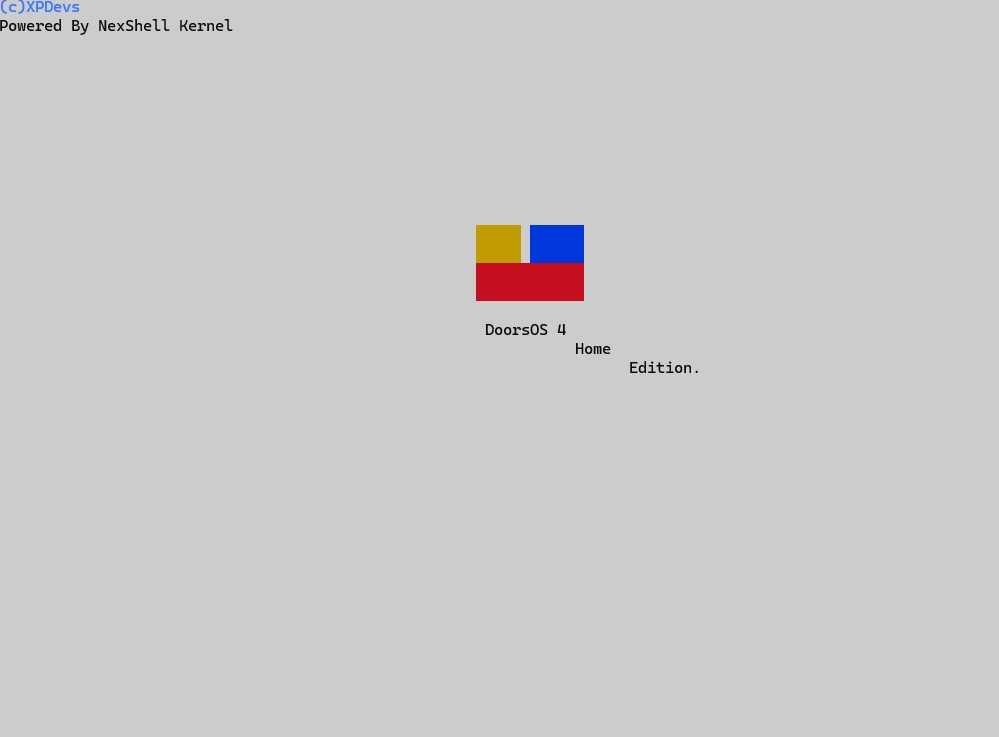

Where we specialize in the development and distribution of cutting-edge operating systems. Our passion lies in crafting software solutions that power devices, streamline workflows, and enrich user experiences across a wide array of platforms.
At XPDevs, we pride ourselves on our innovative approach to operating system design, leveraging the latest technologies and methodologies to create robust, reliable, and user-friendly software. With a dedicated team of developers, engineers, and designers, we work tirelessly to push the boundaries of what's possible in the world of computing.
Our commitment to excellence extends beyond just creating exceptional software. We are also dedicated to providing top-notch support and resources to our users, ensuring that they have everything they need to succeed in their endeavors. Whether you're a seasoned professional or just starting out, we're here to help you navigate the ever-evolving landscape of technology.
Join us on our journey as we continue to innovate, inspire, and transform the way the world interacts with technology. Together, we can shape the future of computing and empower individuals and businesses alike to achieve their full potential.
Thank you for choosing XPDevs. Let's build something amazing together.
Be the first to see what Software we are developing
We can be contacted through our customer support email:xpdevs.github.io.com@gmail.com
If you would like us to make custom software for you please email use here, where you will be charged for us making your software:xpdevsclient@gmail.com
Announcement from XPDevs: DoorsOS 4 is in Development! We at XPDevs are thrilled to officially announce that DoorsOS 4 is currently in development! Our team has been hard at work, and we are excited to share some early progress.
This section is for those tracking the development stage of DoorsOS. Below, you'll find the latest updates and insights into our progress as we work toward an official release.
As of now, we are in the early development phase of DoorsOS 4. Here's a breakdown of our progress:
bootsect script for file integrity checks and logo display.We anticipate that the development of the login authentication system will take an additional 1-2 months.
The reason the development of DoorsOS 4 is taking so long is because we are ensuring that everything is as stable as possible and secure for your daily use without worrying about being hacked.
We value community feedback during this early development phase. If you're interested in becoming a beta tester or want to stay informed about the latest developments, please follow us on our official channels. Your input will help shape the future of DoorsOS!